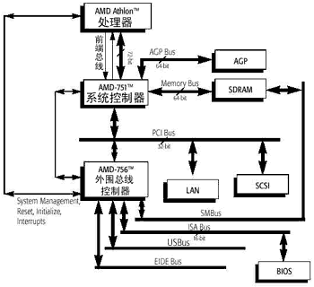
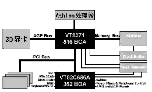

|
|
| 当前位置：电脑报电子版 > 1999 年 > 33 期 > 硬件周刊 > AMD Athlon芯片组初探 |
| 《 AMD Athlon芯片组初探 》 |
| 8月9日，AMD推出了最新的650MHz Athlon处理器，在业界取得了非常好的反应。AMD Athlon不仅在时钟频率上超过了Intel，在各项性能上的表现也大大超过了Pentium Ⅲ甚至PⅢ Xeon。可以说，AMD打了一个漂亮的翻身仗。从此，高性能X86处理器不再只是Intel的天下，今后Athlon与Pentium Ⅲ在高端市场的争夺一定会非常激烈。 然而，由于Athlon使用了全新的Slot A架构，与Intel的Slot 1不兼容，所以不能用在原来的Super7或Slot1主板上。为了配合Athlon的大量上市，AMD和威盛（VIA）各自推出了支持Athlon的芯片组：AMD－750和VIA Apollo KX133。 技术先进的AMD－750 AMD－750是AMD最近开发的一款芯片组，也是第一款能够支持SlotA架构的Athlon的芯片组，其北桥芯片代号为AMD－751，南桥芯片代号为AMD－756。AMD－750芯片组的最大特点就是采用了72位带宽、200MHz的Alpha EV6前端总线（FrontSide Bus）来连接CPU，速度是目前主流440BX芯片组的两倍，这使它能够充分发挥Athlon处理器的强大处理能力；而内存则以异步的方式通过64位100MHz的内存总线与北桥芯片相连，以支持目前流行的PC100 SDRAM。这种组合方式既提高了性能，又降低了成本，用户也用不着去购买技术还未成熟且非常昂贵的Rambus DRAM。 AMD－750的南桥芯片提供了强大的外围设备支持，其强大的IDE控制器，能够支持最新的Ultra DMA66技术，并配合支持该技术的IDE硬盘，能够大大提高硬盘的数据传输率而降低CPU占用率，提供最高性能的磁盘子系统。现在，USB设备越来越流行，并很有可能成为下一世纪外围设备的标准接口。AMD－750能够支持多达4个USB接口，也是Intel芯片组的两倍。 另外，AGP 2X、PCI2.2、即插即用（Plug n Play）、ACPI电源管理等主流的功能AMD－750都具备了，还有最为重要的一点：AMD－750是非Intel芯片组中第一块能够支持SMP（对称多处理功能）的芯片组，也是目前惟一一块能够让两个Athlon一起工作的芯片组，真难以想象两个650MHz的Athlon一起跑起来该是什么样的感觉！ 由此看来，AMD－750确实是一款很先进的芯片组，由于是AMD自己开发，所以也一定是对Athlon处理器支持最好的芯片组。但是，AMD－750在设计上显得比较严谨，如最大只能支持到3条DIMM、768M内存，并且有些最新的技术特别是AGP 4X和PC133 SDRAM未被支持不能不说是一种遗憾。 幸好，我们还有另一种选择，那就是威盛的VIA Apollo KX133。 功能全面的VIA Apollo KX133 威盛的志向倒是不小，想成为“亚洲的英特尔”。继推出了Super7取得辉煌业绩之后，威盛于去年推出了兼容Slot1芯片组Apollo Pro，今年居然又接连收购了Cyrix和IDT的CPU研发部门，取得了与Intel的部分交叉授权，推出了支持PC133的芯片组Apollo Pro133，并且又与Intel作对，抢先推出了PC133。其实，威盛能有今天还得感谢AMD的K6－2，所以AMD刚推出Athlon处理器，威盛就以最快的速度宣布了支持Athlon的最新芯片组：VIA Apollo KX133。Apollo KX133的北桥芯片是新开发的VT8371，南桥芯片则是和Apollo Pro133相同的超级南桥VT82C686A。Apollo KX133采用了和AMD－750差不多的设计，也有专门的200MHz前端总线连接CPU和内存异步方式，但不同的是Apollo KX133可以支持66/100/133的内存频率，也就是真正支持PC133 SDRAM，比起100MHz频率的内存能提高不少的性能。而且，Apollo KX133支持4条DIMM和多达2GB的系统内存，是目前BX芯片组支持内存数的两倍。大容量、高速度的内存对于系统性能提升的作用是不言而喻的。 在另外的一些方面，Apollo KX133也做得非常出色。它提供AGP 4X功能，能为3D加速卡提供最大的带宽，创造出逼真的3D环境；它也支持Ultra DMA/66和4个USB接口；它还内建了符合AC－97标准的音频芯片和软Modem，能够为要求不高的用户节省一笔开支；还有VIA独有的硬件监控技术（Hardware Monitoring）和高级电源管理功能等等。可以看出，威盛的这款Apollo KX133几乎支持了所有最新的技术，整体性能比起AMD－750显得更为完善。况且威盛一向就是对AMD系列CPU支持最好的芯片组厂商。不过，Apollo KX133也并非没有缺点，最大的弱点就是不支持多处理器，看来要使用多个Athlon还是得用AMD自己的芯片组。下表是几款主流芯片组的性能参数。 顺便说一句，Apollo KX133的正式量产要等到十月份以后，现在厂商推出的SlotA主板都是用AMD－750的。 AMD Athlon已经离我们越来越近，跨世纪的CPU大战即将打响。究竟AMD能否凭借Athlon在一直被Intel控制的高端市场分得一杯羹呢？且让我们拭目以待。 （上海 孤雪） |
| 下载本期推荐软件 | 页 首 |
| 《电脑报》版权所有，电脑报网站编辑部设计制作发布 |